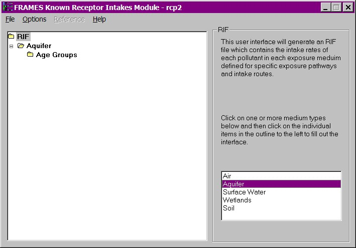
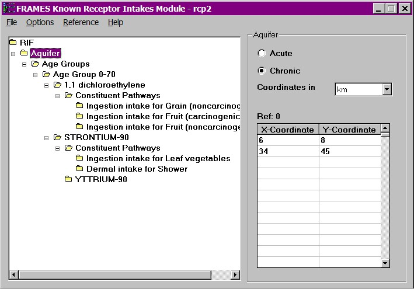
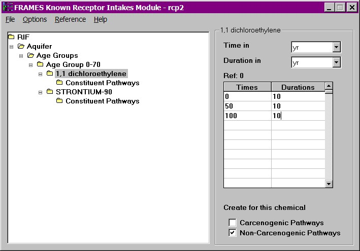
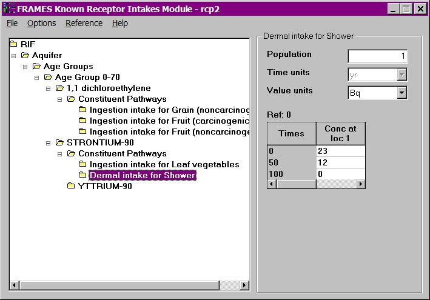

Fig: Age Groups
Use this module only if you know the receptor constituent intakes for the human populations. The constituent intake rates, at user provided points in time and media, are entered directly through the interface. This module does not compute the ingrowth of progeny because the user is assumed to know everything about the source, including progeny intakes. Therefore, this module assumes that the progeny intakes are input along with the parent intakes.
For more information about the file specification that this module produces see RIF Specifications on the FRAMES web site.
Medium
Choose one or more medium types i.e. Air, Aquifer, Surface Water, Wetlands, Soil. Selected medium types will be highlighted. To remove a selection, click on the highlighted medium type.

Fig: Medium
Exposure Characterization
Select Acute or Chronic depending on the time period of exposure to the constituent. If the exposure is over a period of less than a year, select Acute. If the effect of an exposure is being assessed over a long term period, i.e. over a period of several years, select Chronic.
Coordinates
Units: km (kilometers).
Range: Greater than 0.
Enter the relative coordinate location where the receptor was exposed to the constituent(s). A minimum of one set of coordinates of locations of potential exposure points is required for the matrix to be generated. A relative coordinate is a location coordinate that is relative to all other coordinates in the simulation. All coordinates in a simulation are expected to be relative.

Fig: Coordinates
Age Group
Units: yr (years)
Range: Greater than 0
Select as many age groups as desired by clicking on Add button. Define the range of each age group by entering the starting and ending age. At least one age group must be defined. A particular age group can be deleted by highlighting it and clicking on the Remove button.
Fig: Age Groups
Time and Duration
Units: yr (year)
Range: Greater than 0
When a age group is selected, a tree view of the constituents to which the receptors were exposed, will be displayed. Click on each constituent in the tree view under this node to enter the times and duration at which the receptor intakes were measured for this age group. Time is the point of occurrence of potential exposure. Duration is the window of time period for which the exposure assessment is being forecast. It is recommended that the duration be constant over time, but not required. A minimum of two times must be entered. Times must be entered in chronological, ascending order (i.e., 0, 5, 10 not 0, 10, 5). The spreadsheet rows must be used consecutively. Anything below a skipped time row will be deleted. A point in time at which a measurement/estimate is given should be relative to all other times entered in the interface and the overall simulation.
The check boxes at the bottom right of the figure below tell the interface to create carcenogenic and/or non-carcenogenic effect types available for chemicals when a pathway is selected. These checkboxes do not appear for radionuclides as radionuclude currently have only one effect type. Click on the desired checkbox to indicate use.

Fig: Time and Duration
Constituent
Choose the pathways through which the receptor is exposed to the constituent. There are four major constituent pathways - Ingestion, Inhalation, Dermal and External. Ingestion is the process through which the constituent would have been swallowed by the receptor. Inhalation involves the receptor breathing the constituent into the body. Dermal is when the receptor's skin comes in contact with the constituent and External pathway encompasses the receptor being exposed to the constituent without it actually entering the body of the receptor. The selection of External pathway is available only for radionuclides and all media except Aquifer.
The selected pathways will be highlighted. Additional pathways can be added by clicking on the exposure route buttons labeled Ingestion, Inhalation, Dermal and External above each list. The newly added pathways will be recognized by other modules only when it is supported by the existing modules. Although a module really shouldn't need to know the pathway label in as much as all the information needed to calculate risk other than the risk factors are supplied here.

Fig: Constituent - Pathway Selection
The type of effect, i.e. carcinogenic, non-carcinogenic or intake, the constituent could have on the receptor is displayed in this window. The display varies depending on the constituent. The user cannot select the type of effect.
Population
Units: None
Range: None
The number displayed in this window depends on how many age groups were entered. If three sets of age groups were selected for analysis, the number displayed in this window will be 3. As at least one age group must be selected for the module to run, the minimum number displyed in this window will be 1.
Concentrations
Units: Varies depending on the medium type in use.
Range: Greater than 0.
Enter the concentration of the constituent at each given time and location. Repeat this for all media, age-group, constituent and selected pathways, combination.

Fig: Concentration